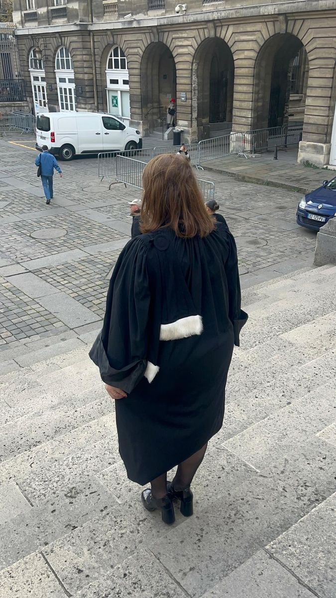

Là où la loi se fabrique
J'ai travaillé pendant quatre années au Sénat en qualité de collaboratrice parlementaire. J'y ai découvert la fabrication de la loi de l'intérieur : le travail avec les parlementaires, le gouvernement, les débats, les amendements, les arbitrages, mais aussi tout ce qui précède l'adoption d'un texte et sa concrétisation politique.
Derrière une règle, il y a toujours une orientation, un choix de société, une volonté politique et, au bout de la chaîne, des personnes auxquelles cette règle va s'appliquer.
De l'autre côté de la porte
C'est aussi à cette période que j'ai commencé à m'intéresser de très près aux questions pénitentiaires et à la justice pénale. J'ai eu l'occasion d'entrer dans de nombreux établissements pénitentiaires et de rencontrer ceux qui vivent la justice depuis l'autre côté de la porte. Cela a profondément marqué ma manière de regarder le droit et, plus tard, ma manière d'exercer.
À l'École des avocats, j'ai voulu poursuivre cette approche très concrète de la profession. J'ai choisi d'effectuer un stage d'immersion à la maison d'arrêt de La Santé. Je voulais comprendre la détention autrement que dans les manuels, la presse, les faits sordides, voir ce que devient une décision de justice une fois prononcée et comprendre ce que représente, dans la réalité, la privation de liberté.

Comprendre le juge
J'ai ensuite travaillé plusieurs mois auprès des magistrats de la Direction des affaires criminelles et des grâces du ministère de la Justice. Cette expérience a été enrichissante. Elle m'a permis de mieux comprendre le raisonnement des juges, leurs contraintes, leur manière d'appréhender un dossier et, surtout, de mesurer à quel point le dialogue avec eux est essentiel.
J'en ai gardé une conviction très simple : un avocat ne défend pas mieux son client en parlant plus fort. Il le défend mieux lorsqu'il connaît parfaitement son dossier, lorsqu'il comprend son interlocuteur et lorsqu'il sait faire entendre, au bon moment, ce que le dossier ne dit pas toujours de lui-même.
Un cabinet à mon image
En novembre 2025, j'ai fait le choix d'ouvrir mon propre cabinet et d'exercer à titre individuel. Je voulais construire ma pratique comme je l'entendais : choisir mes dossiers, connaître réellement mes clients, rester accessible et ne jamais transformer la relation entre l'avocat et celui qu'il défend en simple numéro de dossier.
J'exerce aujourd'hui principalement en défense pénale, droit des étrangers, droit du travail et droit de la famille.
Je suis avocate, mais je suis aussi une mère, une épouse, une amie. Je connais les contraintes d'une vie qui ne s'arrête pas lorsque surgit une procédure, une audience ou une difficulté administrative. Je sais qu'une affaire judiciaire n'arrive jamais seule : autour, il y a un travail, une famille, des enfants, des peurs, parfois des années de vie qui peuvent être bouleversées par une décision.
Je suis une avocate engagée dans les dossiers que j'accepte, disponible pour mes clients et attachée à une certaine idée de la défense : dire les choses avec franchise, ne jamais promettre ce que le droit ne permet pas de promettre, chercher une solution lorsqu'elle existe et se battre lorsqu'il faut se battre.
J'ai voulu mon cabinet à cette image. Un cabinet où l'on connaît le droit, évidemment. Mais surtout où l'on n'oublie jamais à qui il s'applique.
Essra Siam